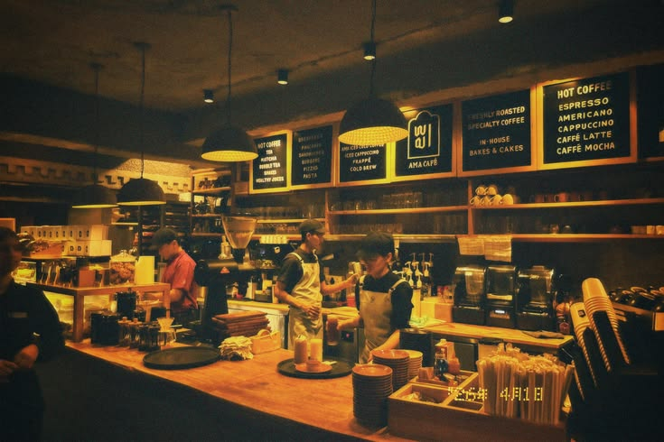

UMKM Batang
Tentang Kopi Kampung
Mengenal lebih dekat dedikasi kami dalam menghadirkan cita rasa kopi lokal terbaik langsung dari petani di Batang.
Cerita Kami
Kopi Kampung lahir dari kecintaan kami terhadap kekayaan hasil perkebunan kopi di pedesaan Batang. Kami bermitra langsung dengan para petani lokal untuk memastikan setiap biji kopi dipetik saat matang sempurna dan diproses secara teliti.

Komitmen Kami
Kami bertekad memajukan ekonomi masyarakat desa melalui sajian kopi berkualitas tinggi yang dapat dinikmati oleh semua kalangan dengan harga yang terjangkau.